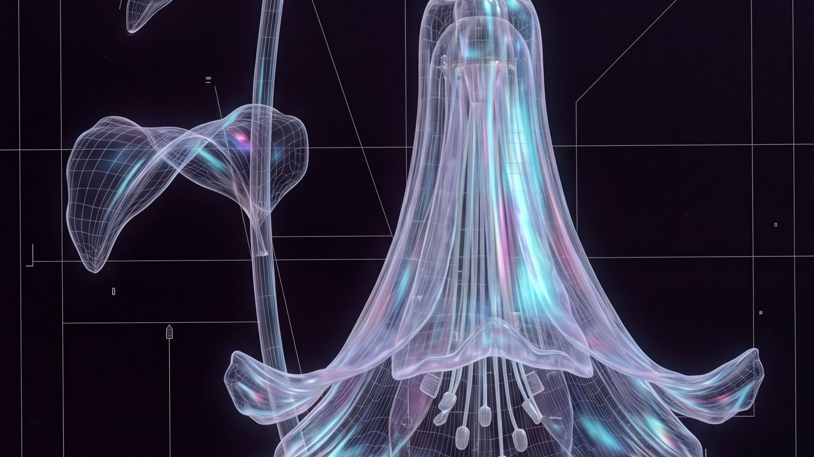
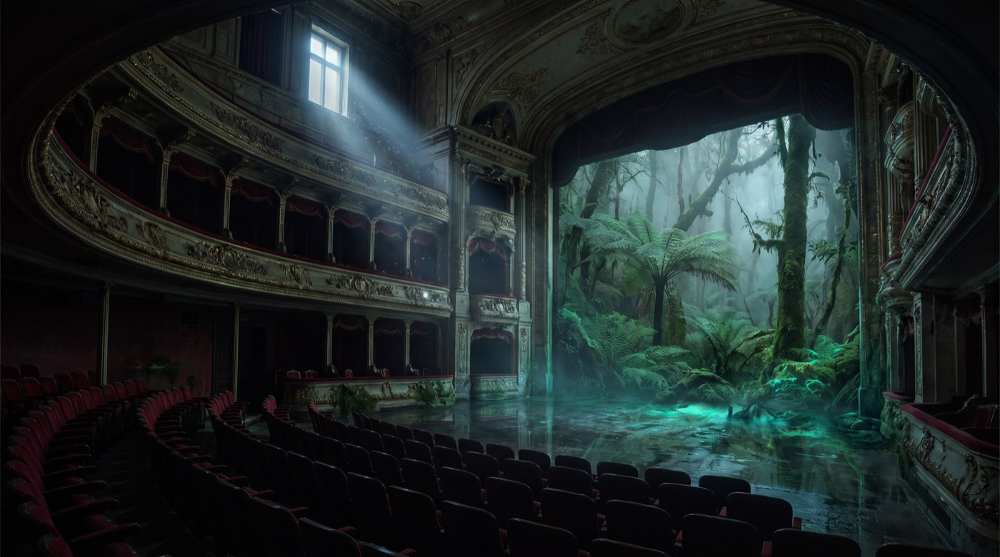
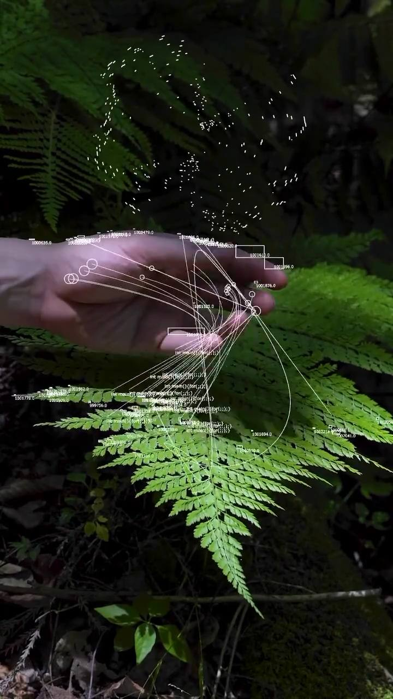
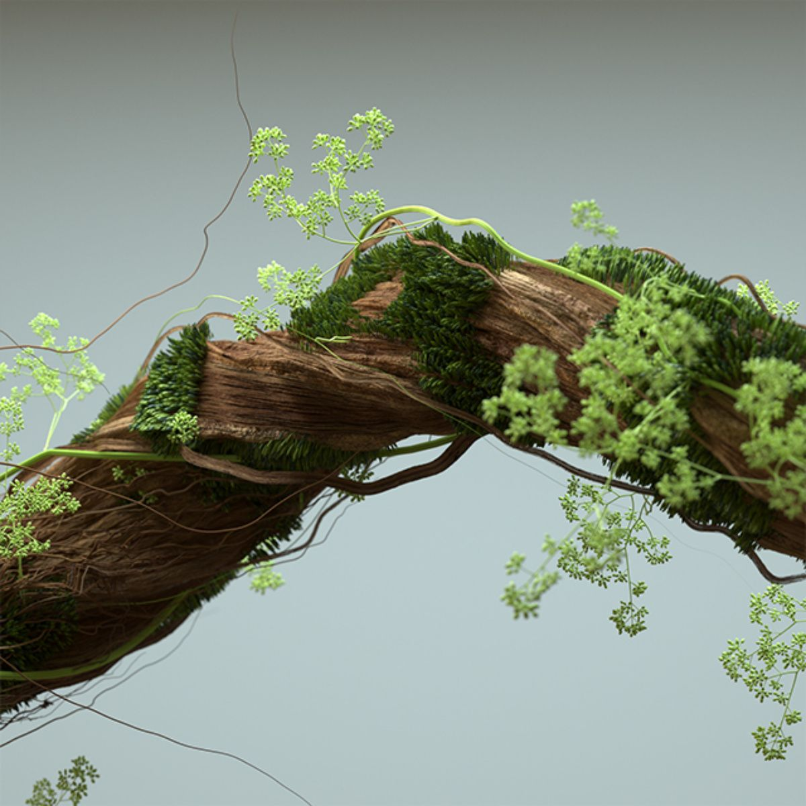
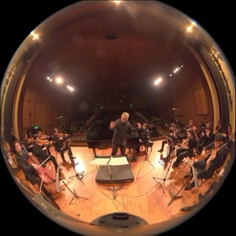
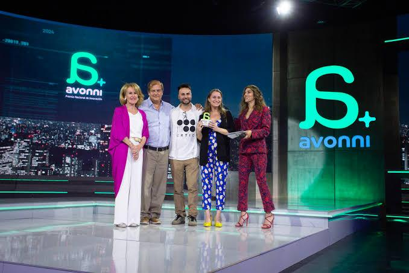
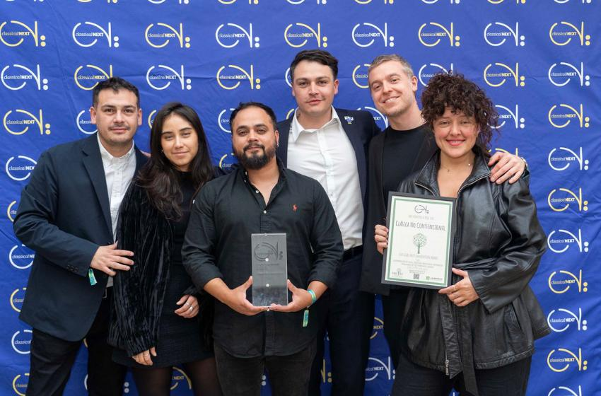

Inside: Valdivia — concierto en vivo, proyección Full Dome y audio espacial, dentro de un domo de 27 metros.

Inside: Valdivia la saca de ahí. El Full Dome ya es infraestructura instalada en el mundo — planetarios, festivales, domos itinerantes — y casi no circula contenido latinoamericano por ella.


La tecnología desaparece. Queda el paisaje.
La estructura la dicta la partitura, no un guion. Registro 360° ya capturado, base del recorrido narrativo dentro del domo.

Un arco emocional en tres tiempos: preparar el cuerpo, abrir el territorio, cerrar en comunidad.
Antes de entrar al domo, el público atraviesa AUGMENTA: una instalación inmersiva de 5 × 5 × 3 m donde el bosque valdiviano reacciona al movimiento — el territorio se camina, se toca, se escucha y se siente.
CRTIC ya cuenta con los activos críticos del contenido. Eso acorta el camino al piloto y reduce el riesgo de producción.

Es el principal reconocimiento a la innovación en Chile. CRTIC lo obtuvo por instalar la tecnocreatividad en la industria cultural.

Único proyecto latinoamericano premiado en la mayor feria mundial de música clásica, junto a Scottish Opera y Opera Aperta (Ucrania).
Inside: Valdivia no es un primer intento. Es lo que ocurre cuando dos trayectorias premiadas apuntan al mismo territorio.
720 asistentes por temporada, cobertura de prensa dedicada y material audiovisual propio del piloto. Tres niveles de asociación:
Una función completa, exclusiva, dentro del domo — para una celebración corporativa, un lanzamiento o un evento cerrado.
Inside: Valdivia es el piloto que valida el formato. Atacama, Patagonia y Chiloé son la misma metodología, aplicada a nuevos territorios.
El territorio se escucha desde adentro.
Tres formas de sumarse antes del estreno — auspicio, contratación o inversión.
Hablemos